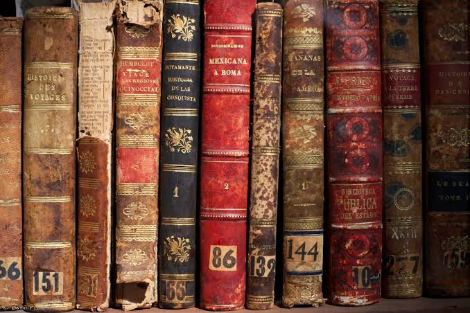

🧠 El mundo de Sofía
Un libro que me permitió conocer la historia de la filosofía de una forma diferente y entretenida mediante los misterios y cartas que recibe Sofía.
La lectura me ha permitido conocer nuevas ideas, descubrir diferentes perspectivas sobre la vida y desarrollar mi imaginación. Disfruto especialmente los libros de fantasía, filosofía, misterio y crecimiento personal.

Un libro que me permitió conocer la historia de la filosofía de una forma diferente y entretenida mediante los misterios y cartas que recibe Sofía.
Una historia llena de enseñanzas sobre el autoconocimiento, la superación personal y la importancia de mirar hacia nuestro interior.
Una de mis sagas favoritas. Me atrapó por su mundo de fantasía oscura, los personajes, las criaturas sobrenaturales y todas las historias que se desarrollan a lo largo de los diferentes libros de la saga.
Una saga juvenil de misterio llena de secretos, intriga y giros inesperados que mantiene el interés del lector en cada capítulo.
Me gusta porque invita a reflexionar sobre la vida, el conocimiento y las decisiones que tomamos.
Disfruto los universos complejos, las criaturas sobrenaturales y las historias llenas de misterio.
Me gustan las historias con secretos, pistas y giros inesperados que mantienen la curiosidad hasta el final.
La lectura me permite aprender constantemente, desarrollar el pensamiento crítico y explorar mundos completamente diferentes. Cada libro me deja nuevas enseñanzas, ideas y formas de comprender la realidad desde distintas perspectivas.